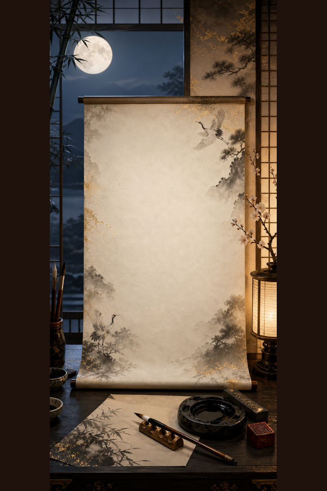
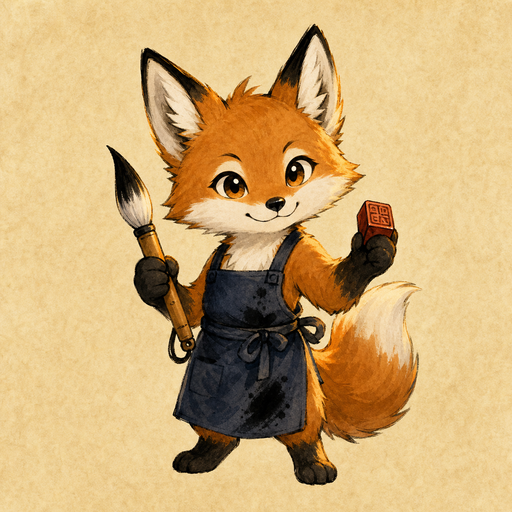

Day 023 · 2D/sumi/
Score0
Best0
Paper Hearts◇◇◇
Blot0%
Combo×1.0
BrushFine
Time0:00
First Moon Stroke
Sumi Ink Seal Scribe
Trace 3 moon strokes in order, keep blot below 18%, and place one vermilion seal.
0/3 strokes
seal waiting
blot ≤ 18%
Calm Breath 0%


Ready ink. Start with stroke 1 using Fine Brush.